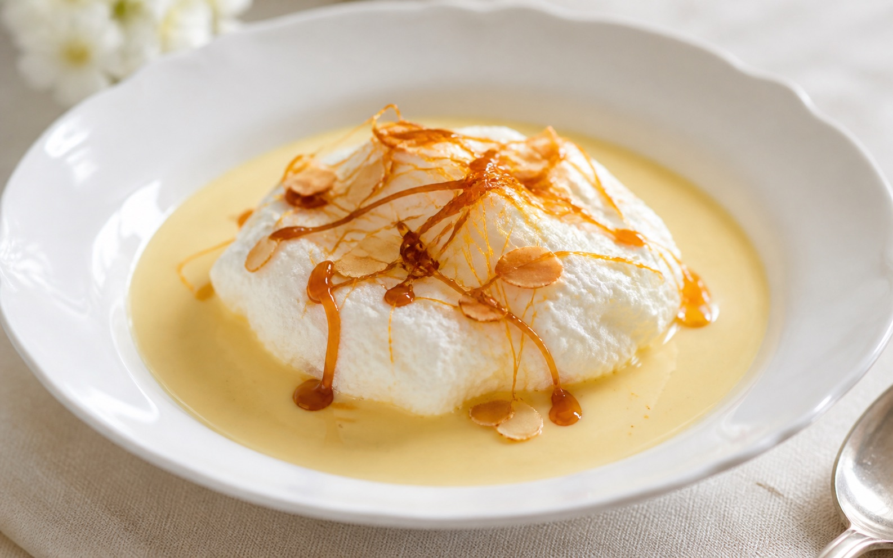

Île flottante aux œufs en neige et crème anglaise maison

L'île flottante appartient au répertoire des desserts français traditionnels à base d'œufs, apprécié pour son contraste entre la légèreté des blancs pochés et l'onctuosité de la crème anglaise. Son origine précise reste discutée selon les régions, certaines évoquant des variantes proches comme les œufs à la neige. Ce dessert demande peu d'ingrédients mais une technique précise : blancs montés fermement, pochage doux pour éviter qu'ils ne se rétractent, et crème anglaise cuite à basse température pour ne pas la faire tourner. Le caramel apporte la touche croquante finale qui équilibre les textures. Un dessert accessible qui récompense la patience et l'attention portée à la cuisson.
Ingrédients
- 6 unités œufs extra-frais fermiers, jaunes et blancs séparés
- 1 litre lait entier de préférence fermier
- 150 g sucre semoule pour la crème anglaise
- 80 g sucre semoule pour monter les blancs
- 1 gousse vanille de Madagascar fendue et grattée
- 100 g sucre en poudre pour le caramel
- 2 cuillères à soupe eau pour le caramel
- 1 pincée sel fin pour monter les blancs
- 20 g amandes effilées légèrement torréfiées pour la décoration
- 1 pincée fleur de sel pour rehausser le caramel
Préparation
Faites chauffer le lait avec la gousse de vanille fendue et grattée jusqu'au frémissement. Pendant ce temps, blanchissez les jaunes d'œufs avec le sucre en fouettant énergiquement jusqu'à obtenir un mélange mousseux et clair. Versez le lait chaud progressivement sur les jaunes en fouettant sans cesse pour éviter de les cuire brutalement. L'erreur classique consiste à verser tout le lait d'un coup, ce qui coagule les œufs immédiatement.
Reversez le mélange dans la casserole et faites cuire à feu très doux en remuant constamment avec une spatule en bois, en formant des huit pour bien racler le fond. La crème est prête lorsqu'elle nappe la spatule et qu'un trait tracé avec le doigt reste net. Ne dépassez jamais 85°C sous peine de voir la crème tourner en grains irrécupérables. Filtrez immédiatement et laissez refroidir en remuant.
Dans un saladier parfaitement propre et sec, montez les blancs d'œufs avec la pincée de sel à vitesse moyenne jusqu'à ce qu'ils moussent, puis incorporez le sucre en trois fois pour les serrer. Continuez de battre jusqu'à obtenir une texture brillante et ferme qui forme un bec d'oiseau au bout du fouet. Des blancs mal montés s'affaisseront à la cuisson et donneront des îles plates et caoutchouteuses.
Portez une grande casserole d'eau à peine frémissante, jamais bouillante, pour éviter que les blancs ne se craquellent. Formez des quenelles de blancs à l'aide de deux cuillères à soupe et déposez-les délicatement dans l'eau. Pochez environ deux minutes de chaque côté en les retournant avec précaution, puis égouttez-les sur un torchon propre ou du papier absorbant.
Dans une petite casserole à fond épais, faites chauffer le sucre avec l'eau sans remuer, en inclinant simplement la casserole pour homogénéiser la coloration. Attendez d'obtenir une teinte ambrée dorée, ni trop pâle ni trop foncée pour éviter l'amertume. Retirez immédiatement du feu car le caramel continue de cuire hors flamme. Ajoutez une pincée de fleur de sel pour équilibrer la douceur.
Versez la crème anglaise froide dans des assiettes creuses ou des coupes individuelles en formant une base généreuse et régulière. Déposez délicatement deux ou trois quenelles de blancs pochés sur la crème, en veillant à ne pas les écraser. Réservez au réfrigérateur jusqu'au moment de servir pour que l'ensemble reste bien frais et ferme.
Juste avant de servir, nappez chaque île d'un filet de caramel encore tiède mais non brûlant pour éviter de faire fondre les blancs. Parsemez d'amandes effilées torréfiées pour apporter du croquant et un contraste visuel. Servez immédiatement pour profiter du contraste entre le caramel craquant, la crème onctueuse et les blancs aériens.
Conseils et astuces
- Pour une crème anglaise parfaitement lisse, utilisez un thermomètre de cuisine et ne dépassez jamais 85°C.
- Une variante consiste à parfumer la crème anglaise avec de la fleur d'oranger plutôt que la vanille, pour une note plus florale.
- La crème anglaise se conserve deux jours au réfrigérateur dans un récipient hermétique, filmée au contact pour éviter la formation d'une peau.
- Un vin doux naturel comme un Muscat de Beaumes-de-Venise accompagne agréablement la douceur de ce dessert.
Questions fréquentes
Pourquoi mes blancs en neige retombent-ils après le pochage ?
Cela indique généralement une eau trop bouillante ou des blancs insuffisamment montés avant la cuisson. Vérifiez que l'eau reste à peine frémissante et que les blancs forment un bec ferme au fouet avant de les pocher.
Peut-on préparer ce dessert la veille pour un repas ?
Oui, préparez la crème anglaise et les blancs pochés séparément la veille, conservez-les couverts au réfrigérateur, puis dressez et ajoutez le caramel seulement au moment de servir pour préserver le croquant.
Quelle est l'erreur la plus fréquente lors de la réalisation de ce dessert ?
La crème anglaise qui tourne en grains reste l'erreur la plus courante, causée par une cuisson trop rapide ou trop chaude. Si cela arrive, mixez immédiatement la crème avec un mixeur plongeant pour retrouver une texture lisse.